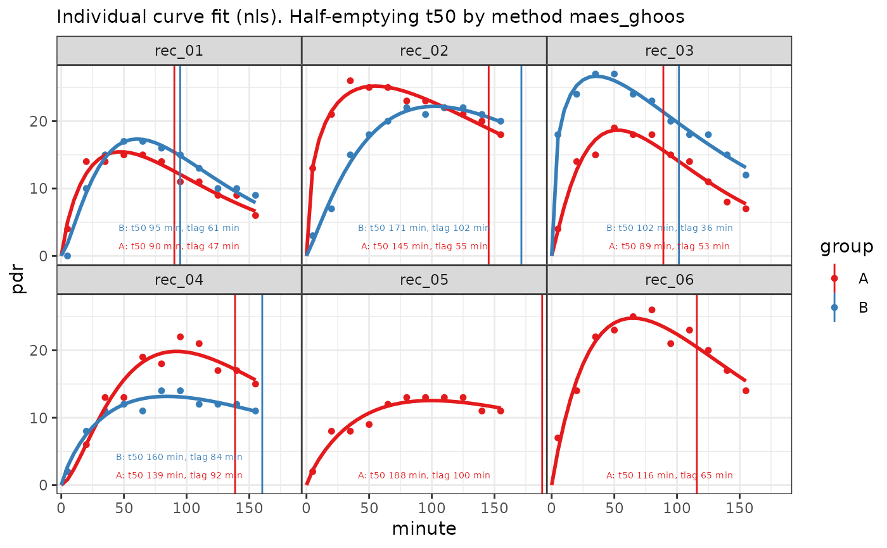

Plots 13C data and fits.
Usage
# S3 method for class 'breathtestfit'
plot(
x,
inc = 5,
method_t50 = "maes_ghoos",
linewidth = 1,
point_size = NULL,
...
)Arguments
- x
object of class
breathtestfit, as returned bynls_fit,nlme_fit,null_fitorstan_fit; stan_fit is in packagebreathteststan,- inc
Increment for fitted curve plot in minutes
- method_t50
Method for t50: "
maes_ghoos", "bluck_coward" or "maes_ghoos_scintigraphy"- linewidth
optional line width; can improve look for printouts
- point_size
optional point size; determined dynamically when NULL
- ...
other parameters passed to methods. Not used
Examples
data = list(
A = simulate_breathtest_data(n_records = 6, seed = 100),
B = simulate_breathtest_data(n_records = 4, seed = 187)
)
# cleanup_data combines the list into a data frame
x = nls_fit(cleanup_data(data))
plot(x)
